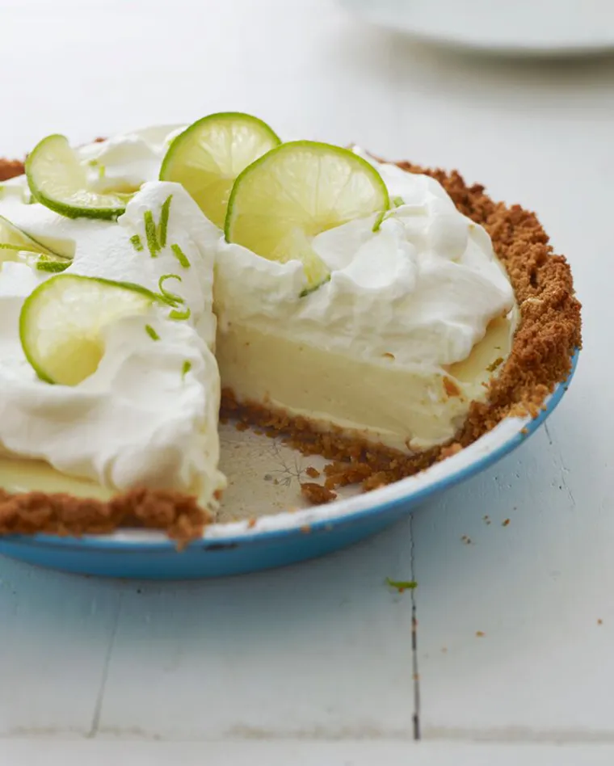

Description
This recipe starts with a graham cracker crust. Keebler Ready Crust works great!
It as simple as mixing the pie filling, pouring into the crust, baking, cooling,
making the frosting, putting on the frosting, chilling for 3 hours, then enjoy.
Ingredients
Pie Crust
- 1 - Keebler Ready Made pie crust, 9 or 10 inch
Pie Filling
- 28 oz sweetened condensed milk
- 1/2 cup light sour cream
- 3/4 cup key lime juice
- zest from 2 regular limes or 4 key limes (optional)
Topping
- 1 cup heavy whipping cream
- 1/2 cup powdered sugar
- 1 tsp vanilla extract
Instructions
Key Lime Filling
- Preheat Oven to 375F.
- Grate zest from limes in a small plate
- Whisk together sweetened condensed milk, sour cream, lime juice, and lime zest in a medium bowl.
- Pour into prepared graham cracker crust.
- Bake for 10 minutes.
- Let pie cool slightly before chilling.
- Chill for 3 hours.
Topping
- Start at the end of the 3 hour pie chill.
- Use blender to beat whipping cream and vanilla starting at medium speed.
- As the mixture thickens up increase the blender to high speed.
- Slowly add the sugar mixing evenly into the cream until still peaks can hold.
- Spread the whipping cream topping evenly or in any design over the chilled pie filling.
- Ready to eat and enjoy.
Return to Top
Return to Main